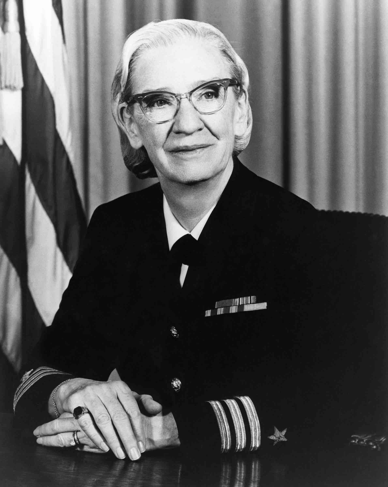
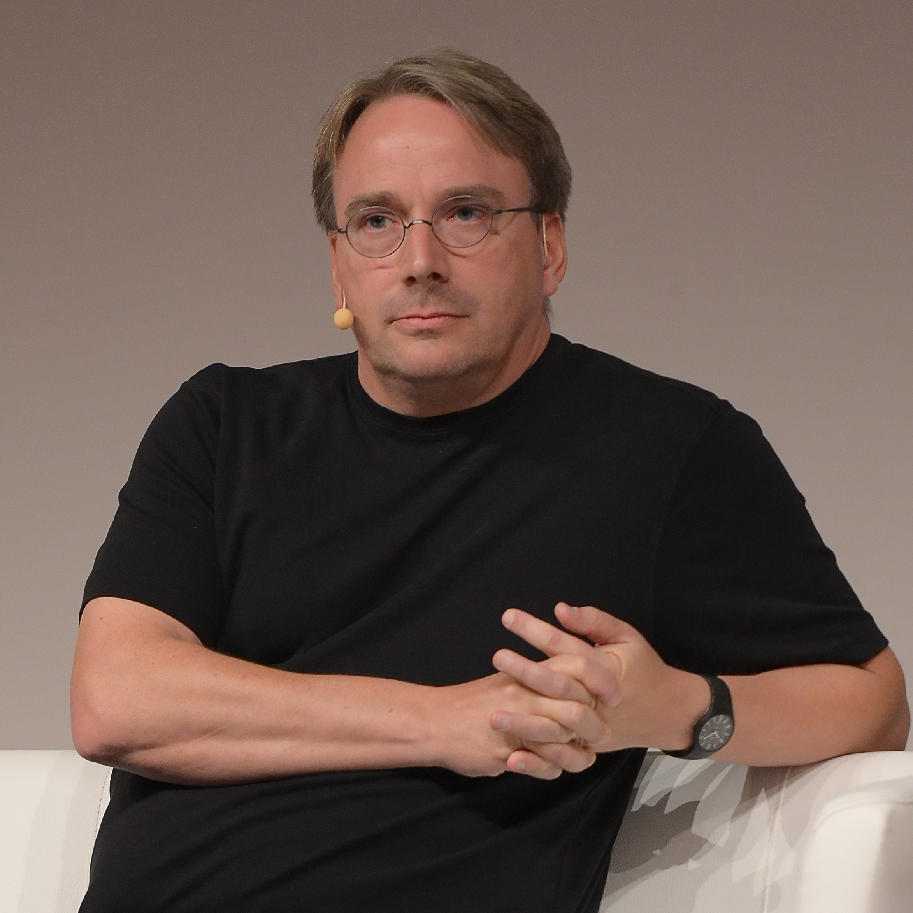

Software and Language Pioneers
Those Who Taught Machines to Speak

Grace Hopper
1906 – 1992
Mother of COBOL, Pioneer of Compilers
Navy Rear Admiral and computer scientist who created the first compiler — a program that translates human-readable code into machine code. Her work led to COBOL, which still processes an estimated $3 trillion in commerce daily. She popularized the term "debugging."
Tim Berners-Lee
1955 – present
Inventor of the World Wide Web
While working at CERN, Berners-Lee invented the World Wide Web in 1989 — a system of hyperlinked documents accessible over the Internet. He gave it away for free, changing civilization. He received a knighthood and the Turing Award for this contribution.

Linus Torvalds
1969 – present
Creator of Linux
Created the Linux kernel in 1991 as a university student. Linux now powers over 90% of the world's servers, all Android phones, and the largest supercomputers. His model of open-source development changed how software is built globally.
Guido van Rossum
1956 – present
Creator of Python
Created Python in 1989 with a focus on readability and simplicity. Python became the dominant language for data science, machine learning, and education. It is consistently ranked the world's most popular programming language.